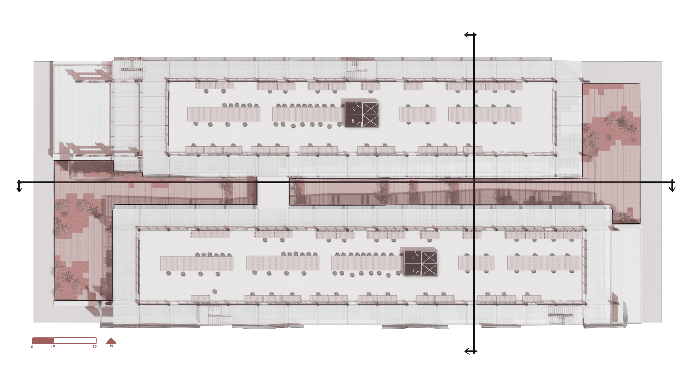

Project Statement
The REFORM Offices imagine workplace as a place where the city can heal itself. Reclaimed metals, unraveled aluminum cans, and fragments of construction waste are collected and reworked into a new skin, then treated with an oxidizing agent to evoke weathered copper. The material becomes a record of transformation and a reminder that the city already holds what it needs to build its future.

The Salvaged Skeleton
The structure is built from reclaimed steel sourced from scrapyards and demolition sites across the city. Each piece is reconditioned into a new grid that retains marks of its previous use and treated to evoke a copper-like patina. The salvaged skeleton of the building reduces material demand and positions structure as an active part of the project's broader culture of reuse.

The Living Stitch
At the center of the building, a planted spine moves through the levels as a shared space for collaboration and reconnection. Reused metals from local scrapyards shape the structure and shading elements around this vertical park. Light and vegetation soften these materials and tie environmental integration to responsible construction, bringing nature back into daily work.

The Working Yard
Reuse continues to shape the everyday workspace. Crushed cans become partitions, wood pallets from casino deliveries are refinished into tables, and vinyl scraps with packing peanuts form transparent beanbags. Reclaimed wood lines the ceiling and bottles hang as improvised fixtures. The project turns waste streams into a functional and expressive interior landscape.